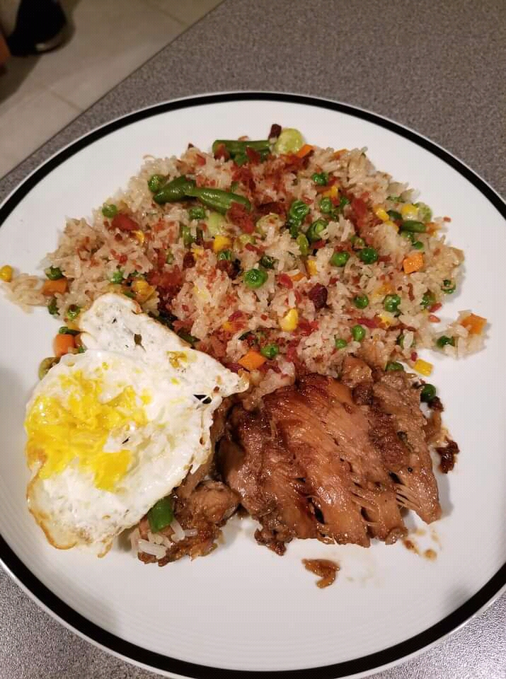

RECIPE FOR FRIED EGG
Ingredients
- 100ml of cooking oil
- 2 eggs
- Table salt
- 2 sliced tomatoes
- Freshly grounded pepper
PROCEDURE
- In a pan of medium heat,heat cooking oil for few seconds.
- Crack egg,add salt and stir then pour it into the pan.
- Cook for some minutes until white is just set
- Add the sliced tomatoes into the pan and continue cooking.
- Remove from the pan and season it with pepper.
SERVING
Serve with strong tea(for breakfast).................
